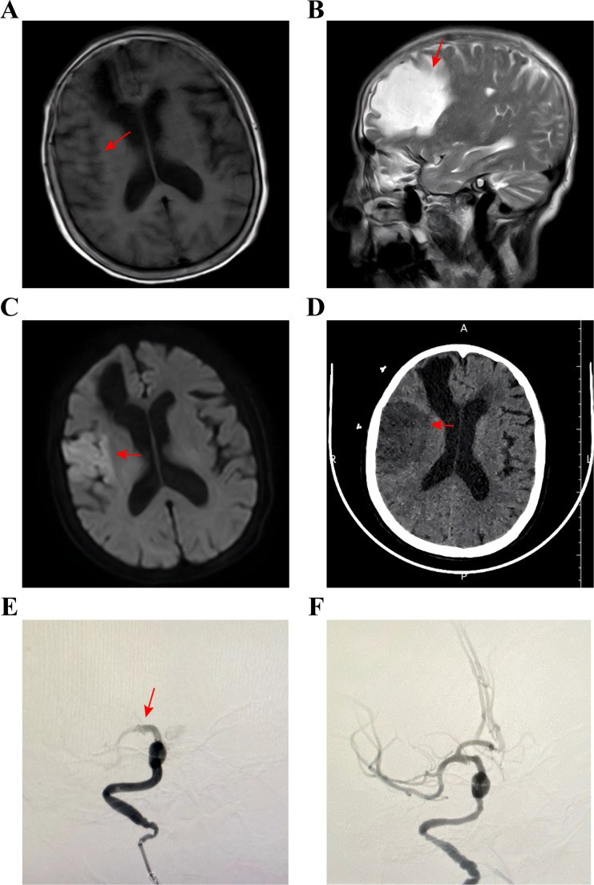
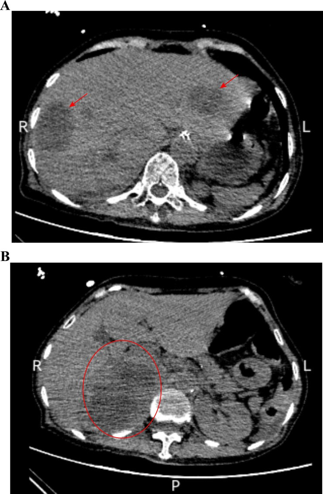
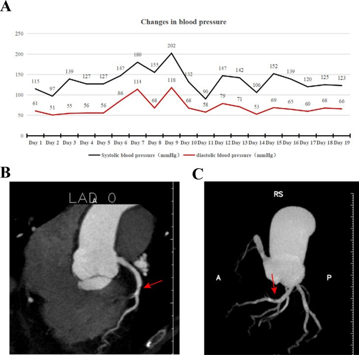

195 — Đột quỵ cấp ở bệnh nhân u tủy thượng thận (PPGL) chưa cắt u: tiêu sợi huyết hay lấy huyết khối? / Acute ischemic stroke in unresected pheochromocytoma–paraganglioma
Tags: pattern:nhoi-mau-nao pattern:tac-mach-lon pattern:con-tha vung:nao vung:thuong-than protocol:CTA-mach-nao protocol:DSA-lay-huyet-khoi score:ASPECTS score:NIHSS score:mRS incidentaloma:u-thuong-than
Mức chắc chắn (certainty): tổng hợp y văn (literature synthesis) — ghép 1 ca nguyên văn có ảnh (PMC13236608, 2026: nhồi máu + lấy huyết khối ở bệnh nhân PPGL chưa cắt) với 1 ca tử vong sau tiêu sợi huyết vì nhồi máu cơ tim (PMC4177258), 1 ca trẻ tử vong do nhồi máu hành não (PMC9794225), 2 loạt ca trẻ (PubMed 12503867) và các ngưỡng chuẩn của AHA/ASA 2019 + Endocrine Society 2014.
Câu chốt: Ở bệnh nhân đột quỵ thiếu máu não cấp mà huyết áp dao động dữ dội (vọt > 200 mmHg rồi tụt < 90/60 mmHg), kèm khối thượng thận hoặc cơn đau đầu–đánh trống ngực–vã mồ hôi, phải nghĩ PPGL (u tủy thượng thận – u cận hạch) trước khi quyết định tiêu sợi huyết. Tiêu sợi huyết (thrombolysis) ở người chưa biết có PPGL có thể gây vỡ u, chảy máu sau phúc mạc (đã có ca tử vong), còn lấy huyết khối cơ học (mechanical thrombectomy) không dùng thuốc tan cục máu nên là lựa chọn ưu tiên khi có tắc mạch lớn — nhưng vẫn phải chẹn alpha và kiểm soát huyết áp trước, trong và sau thủ thuật.
1. Tổng quan bệnh học – cơ chế hình ảnh
- Dịch tễ (số liệu): PPGL gặp ở 0,1–0,6% người tăng huyết áp; tỉ lệ mới mắc khoảng 1,9/1 triệu người–năm; 10–30% u hoàn toàn không triệu chứng và được phát hiện tình cờ trên hình ảnh (PMC13236608, PMC4177258). Ở trẻ, PPGL chỉ chiếm ~1% các ca tăng huyết áp nhi (PubMed 12503867) — nhưng chính vì thế mà bị bỏ sót lâu hơn.
- Vì sao catecholamine gây tắc mạch LỚN (không chỉ co thắt nhỏ): ba cơ chế cộng lại —
- Tổn thương nội mô do tăng huyết áp dữ dội → bộc lộ yếu tố mô, kết dính tiểu cầu;
- Tăng đông (hypercoagulability): catecholamine làm tăng yếu tố đông máu và ức chế tiêu sợi huyết nội sinh, đồng thời cô đặc máu do mất nước;
- Co mạch + dòng chảy xoáy tại chỗ hẹp → huyết khối hình thành tại chỗ hoặc từ tim (bệnh cơ tim do catecholamine sinh huyết khối trong buồng tim). Hệ quả trên hình ảnh: tắc ICA/MCA (hoặc thân nền) với huyết khối dài, "quá tải" (large clot burden), thường không tương xứng với mức xơ vữa — mạch máu "trơn" ở người trẻ nhưng bị bít hoàn toàn.
- Vì sao hình ảnh não không đủ để chẩn đoán nguyên nhân: tổn thương trên DWI/ADC chỉ nói "nhồi máu", không nói "vì catecholamine". Cái đổi thái độ điều trị là bối cảnh huyết áp dao động + khối thượng thận + metanephrine. Vì vậy mọi ca đột quỵ trẻ/không rõ nguyên nhân nên chụp CT bụng cùng lần CTA não khi có tăng huyết áp khó kiểm soát.
- Vì sao TIÊU SỢI HUYẾT nguy hiểm riêng ở PPGL: u tủy thượng thận là khối mạch máu rất giàu, áp lực trong u cao; khi có cơn tăng huyết áp kèm ly giải fibrin, u dễ vỡ trong u rồi vỡ vỏ. Y văn ghi 65 ca vỡ u PPGL cấp tính, trong đó ~20% chảy máu lan cả sau phúc mạc và ổ bụng; dưới 1/3 bệnh nhân có triệu chứng gợi ý PPGL trước đó (PMC4177258). Ca điển hình: nam 62 tuổi, tenecteplase vì STEMI, 1 giờ sau đau bụng dữ dội, huyết áp tụt 70/30 mmHg, mổ cấp cứu thấy u thượng thận trái 10 × 7 × 2 cm đã vỡ, tử vong vì suy đa tạng.
- Ngưỡng và số liệu của ca lấy huyết khối (ca nguyên văn có ảnh): nữ 70 tuổi, nhập viện vì STEMI (đã quá cửa sổ can thiệp), ngày thứ 2 đột ngột yếu nửa người trái — MRI thấy nhồi máu lớn bán cầu phải, DSA xác nhận tắc ICA phải + thân trên MCA phải, lấy huyết khối đạt eTICI 3. VMA niệu 59,11 mg/24 giờ (tham chiếu 0–12), khối thượng thận phải 10 × 6,8 cm trên CT. Huyết áp trong viện dao động 202 mmHg đến < 90/60 mmHg, phải dùng phenoxybenzamine dài hạn. Biến chứng: máu tụ dưới màng cứng sau mổ do phối hợp kháng kết tập tiểu cầu + kháng đông (PMC13236608).
- Vì sao trẻ em nguy hiểm hơn: trẻ thường không có triệu chứng kinh điển, biểu hiện bằng co giật, hôn mê, suy tim; ca 5 tuổi nhồi máu hành não – tủy cổ C7, tử vong, giải phẫu phát hiện PPGL + đột biến VHL c.414A>G (PMC9794225). Hai trẻ Đài Loan: một nhồi máu, một xuất huyết nội sọ, norepinephrine niệu 1.480,8 và 3.279 µg/ngày (PubMed 12503867).
2. Mẫu hình + chẩn đoán phân biệt theo cơ chế (gamut)
- A — Tắc mạch lớn (LVO) do huyết khối "catecholamine": NIHSS cao đột ngột, ASPECTS ≥ 6, CTA thấy tắc ICA/M1/thân nền, mạch không xơ vữa nặng. Đây là nhóm hưởng lợi từ lấy huyết khối — và là nhóm đặt câu hỏi "có nên tiêu sợi huyết?".
- B — Nhồi máu vùng phân thủy (watershed) do tụt huyết áp: sau cơn THA, u tiết catecholamine rồi "cạn" đột ngột (hoại tử u, chẹn alpha quá tay, mất nước) → tụt áp → tổn thương giữa các lãnh thổ mạch, đối xứng hai bên. Đừng nhầm với bệnh mạch nhỏ.
- C — Xuất huyết nội sọ / dưới nhện: cơn THA > 200 mmHg làm vỡ mạch nhỏ; trên CT là máu tụ thùy/nhân bèo hoặc SAH — chống chỉ định tiêu sợi huyết tuyệt đối.
- D — PRES/RCVS (phù mạch, co mạch từng đoạn): đau đầu sét đánh tái diễn, co giật, mù vỏ não; MRI FLAIR sáng nhưng ADC TĂNG (phù, không hồi phục tổn thương) hoặc co thắt "chuỗi hạt" trên MRA/DSA (bài
184). - E — Nhồi máu + huyết khối động mạch ngoại biên cùng lúc: PPGL gây trạng thái tăng đông toàn thân; ca 50 tuổi có PPGL chưa cắt bị nhồi máu não + tắc động mạch dưới đòn/nách/cánh tay, phải mổ lấy huyết khối chi (PubMed 23478505); ca 25 tuổi sốc catecholamine có thiếu máu chi dưới sau đặt catheter, phải cắt cụt (PMC13061532). Gợi ý: tìm thêm tắc mạch ngoài não khi đã xác định PPGL.
- F — Bắt chước (mimic): bệnh mạch máu nhỏ do THA, viêm mạch nguyên phát CNS (đã có ca bị chẩn đoán nhầm viêm mạch rồi chụp mạch gây cơn THA — PubMed 18509763), loạn sản cơ xơ (FMD), thuốc co mạch (cocaine, triptan).
- Gợi nhớ 5 nhóm mạch máu của catecholamine: "L–W–H–P–R" — LVO, Watershed, Hemorrhage, PRES, RCVS.
3. Bảng so sánh phân biệt (ma trận đối chiếu)
| Thực thể (entity) | Hình ảnh điển hình | Chốt vào (rule-in) | Chốt loại (rule-out) | Gợi ý xác nhận |
|---|---|---|---|---|
| Nhồi máu LVO do PPGL | Tắc ICA/M1/thân nền trên CTA; DWI hạn chế khuếch tán lãnh thổ lớn; không xơ vữa đáng kể; ± khối thượng thận | THA dao động + khối thượng thận + metanephrine/VMA tăng (VMA 59,11 mg/24h) | Mảng xơ vữa loét/hẹp > 70% tại chỗ tắc + không có u → xơ vữa | CTA não + CT bụng cùng lần; metanephrine; DSA |
| Nhồi máu xơ vữa (người lớn tuổi) | Hẹp–tắc tại chỗ xơ vữa, vôi hóa, nhiều ổ nhồi máu rải rác, tuổi > 60, ĐTĐ/hút thuốc | Hẹp tại chỗ + yếu tố nguy cơ + không u thượng thận | THA kịch phát từng cơn + u thượng thận → PPGL | CTA/CTP; siêu âm Doppler cảnh |
| RCVS | Co thắt từng đoạn "chuỗi hạt" trên MRA/DSA, hồi phục sau ~3 tháng; ± nhồi máu phân thủy | Đau đầu sét đánh tái diễn + co mạch lan tỏa + hồi phục | Tắc một điểm cố định + giảm tưới máu lãnh thổ → LVO | MRA/DSA lặp lại sau 8–12 tuần |
| PRES | Phù chẩm–đỉnh đối xứng, FLAIR sáng, ADC tăng; thể trung tâm ở THA mạn | Phù mạch không hạn chế khuếch tán + đáp ứng hạ áp | ADC tối → nhồi máu thật | MRI DWI/ADC; theo dõi hồi phục |
| Xuất huyết não do cơn THA | Máu tụ nhân bèo/đồi thị/thùy, ± IVH; tăng tỷ trọng 50–80 HU cấp | Máu tụ trên NCCT + THA > 180/120 | Không có máu trên NCCT → nhồi máu | NCCT; CTA loại trừ phình/dò |
| Viêm mạch CNS (bắt chước) | Hẹp–co thắt nhiều ổ, nhiều mạch, ngấm màng não; không có u thượng thận | Đa ổ + tổn thương nhu mô dạng nốt + CRP cao | Metanephrine tăng + u thượng thận → PPGL | MRI tương phản; sinh thiết não (hiếm) |

Nữ 70 tuổi có PPGL chưa cắt: (A–C) MRI T1/T2/DWI — nhồi máu lớn bán cầu phải; (D) CT — giảm tỷ trọng vùng đảo/thùy trán; (E) DSA — tắc thân trên MCA phải; (F) sau lấy huyết khối, eTICI 3. Nguồn: Frontiers in Oncology 2026 (PMC13236608), CC BY 4.0.4. Protocol chụp + ngưỡng xử trí
- Trình tự hình ảnh (không chậm cửa sổ vàng): NCCT (loại trừ xuất huyết) → CTA đầu–cổ (tắc mạch lớn, bóc tách, hẹp tại chỗ) → CT tưới máu nếu 6–24 giờ hoặc không rõ thời điểm khởi phát. Kèm CT bụng có cản quang nếu huyết áp dao động hoặc có khối thượng thận tình cờ — không hoãn lấy huyết khối vì chờ kết quả bụng.
- Ngưỡng huyết áp (AHA/ASA 2019):
- Tiêu sợi huyết: chỉ dùng khi HA < 185/110 mmHg và giữ < 180/105 mmHg trong 24 giờ sau.
- Lấy huyết khối: HA < 185/110 mmHg trước thủ thuật; sau thủ thuật giữ < 180/105 mmHg; tránh hạ áp tích cực quá mức vì có thể làm giảm tưới máu vùng bán nguyện (penumbra).
- Ở PPGL, ngưỡng này khó đạt bằng thuốc thường vì THA do catecholamine → cần chẹn alpha trước.
- Chuẩn bị PPGL (Endocrine Society 2014 + bài
177): chẹn alpha 7–14 ngày trước can thiệp/mổ, đích HA ngồi < 130/80 mmHg** và **HA tâm thu đứng > 90 mmHg; bù muối ≥ 5.000 mg/ngày; không chẹn beta đơn thuần (nguy cơ co mạch không đối kháng alpha). - Cơn catecholamine cấp: phentolamine 1–5 mg IV (bolus, lặp lại) hoặc nicardipine truyền; sau khi đã chẹn alpha mới thêm esmolol nếu nhịp nhanh; theo dõi hạ HA sau khi cắt u (ca PMC13236608 tụt < 90/60).
- Thời điểm cắt u: sau đột quỵ nên hoãn ≥ 6 tuần để não ổn định, đồng thời đạt chẹn alpha đầy đủ (bài
184, ca cần 9 tuần chẹn alpha và vẫn có 6 cơn THA trong mổ). - Chống chỉ định tiêu sợi huyết cần nhớ: xuất huyết nội sọ, ASPECTS thấp, THA kháng trị > 185/110, rối loạn đông, nghi PPGL chưa chẹn alpha (nguy cơ vỡ u — bằng chứng ca, không phải chống chỉ định tuyệt đối trong guideline).
flowchart TD
A[Đột quỵ thiếu máu não cấp] --> B[NCCT loại trừ xuất huyết]
B --> C{CTA: tắc mạch lớn?}
C -->|Có| D[Đánh giá ASPECTS + NIHSS]
C -->|Không| E[CTP/MRI + điều trị nội khoa]
D --> F{HA < 185/110 và nghi PPGL?}
F -->|Không nghi PPGL| G[Tiêu sợi huyết nếu đủ tiêu chuẩn]
F -->|Nghi PPGL| H[Chẹn alpha: phentolamine/nicardipine]
H --> I[Lấy huyết khối cơ học — ưu tiên, không ly giải]
I --> J[HA sau thủ thuật < 180/105]
J --> K[Cân nhắc kháng kết tập đơn độc, tránh phối hợp kháng đông]
K --> L[Hoãn cắt u >= 6 tuần + chẹn alpha đủ]
5. Biến thể bình thường và cạm bẫy
- Biến thể bình thường dễ nhầm: nhân xám sáng hơn chất trắng trên DWI (bình thường, do mật độ tế bào) — đừng đọc là "nhồi máu vỏ"; giãn khoang quanh mạch (Virchow–Robin) không hạn chế khuếch tán; động mạch giảm tín hiệu do dòng chảy trên MRA không phải tắc.
- Cạm bẫy 1 — "đột quỵ do xơ vữa" ở người trẻ/bệnh nhân THA khó kiểm soát: bỏ qua PPGL nghĩa là bỏ qua nguyên nhân chữa khỏi được và tiếp tục dùng thuốc hạ áp thông thường (có thể gây tụt áp).
- Cạm bẫy 2 — tiêu sợi huyết khi chưa biết có PPGL: nguy cơ vỡ u, chảy máu sau phúc mạc; ca 62 tuổi tử vong sau tenecteplase (PMC4177258). Nếu đã lỡ dùng và xuất hiện đau bụng + tụt HA, nghĩ ngay chảy máu trong u, không chờ "sốc phản vệ".
- Cạm bẫy 3 — chẹn beta trước chẹn alpha: làm mất đối kháng alpha → co mạch nặng, THA nghịch lý; cũng đừng dùng labetalol khi định đo metanephrine (gây nhiễu xét nghiệm).
- Cạm bẫy 4 — chụp mạch số hóa khi chưa chẹn alpha: ca bị chẩn đoán "viêm mạch", chụp mạch thường quy → cơn THA + nặng thêm thần kinh (PubMed 18509763). Ở PPGL, mọi can thiệp có cản quang/kích thích đều cần chuẩn bị alpha trước.
- Cạm bẫy 5 — sau lấy huyết khối dùng "kháng kết tập kép + kháng đông": ca PMC13236608 bị máu tụ dưới màng cứng; ở PPGL nên giảm bậc sớm, ưu tiên một thuốc, theo dõi NCCT khi đau đầu mới.
- Cạm bẫy 6 — bỏ sót khối thượng thận "tình cờ": khối thượng thận > 4 cm, không đồng nhất, ngấm mạnh ở bệnh nhân THA phải loại trừ PPGL trước khi sinh thiết — sinh thiết u PPGL có thể gây cơn THA chết người (bài
155,168).
6. Tự lượng giá — Blind Quiz
Ca 1 — Nữ 70 tuổi, yếu nửa người trái đột ngột ngày thứ 2 nhập viện. Nhìn ảnh trước, mô tả trước.
- Gợi ý lâm sàng: đang điều trị vì nhồi máu cơ tim, huyết áp dao động mạnh; không có tiền sử rung nhĩ.
- Câu hỏi: (1) Tổn thương ở lãnh thổ mạch nào? (2) Có tắc mạch lớn không? (3) Ba chẩn đoán phân biệt về nguyên nhân, và dấu hiệu nào trên ảnh bụng giúp chốt?
Bấm để hiện đáp án (findings + chẩn đoán)
- Dấu hiệu (findings): (A–C) MRI T1/T2/DWI — vùng giảm T1, tăng T2, tăng DWI lớn ở thùy trán–đỉnh–thái dương–đảo phải; (D) CT — giảm tỷ trọng vùng đảo/thùy trán, mất ranh giới xám–trắng; (E) DSA — tắc thân trên MCA phải; (F) sau lấy huyết khối eTICI 3.
- Chẩn đoán (diagnosis): nhồi máu não cấp do tắc mạch lớn trên nền PPGL chưa cắt (u thượng thận phải 10 × 6,8 cm; VMA niệu 59,11 mg/24h). Cơ chế: catecholamine → tổn thương nội mô + tăng đông + co mạch → huyết khối tại chỗ.
- Vì sao không tiêu sợi huyết: huyết áp dao động tới 202 mmHg, nguy cơ vỡ u và xuất huyết chuyển dạng; chọn lấy huyết khối cơ học.
- Nguồn ảnh: Frontiers in Oncology 2026 (PMC13236608), CC BY 4.0.
Ca 2 — Cùng bệnh nhân: CT bụng sau can thiệp.

- Câu hỏi: Mô tả khối và vị trí; nó giải thích triệu chứng nào? Cần xét nghiệm gì trước khi can thiệp tiếp?
Bấm để hiện đáp án
- Dấu hiệu: khối bầu dục 10 × 6,8 cm giữa gan và thận phải, không đồng nhất, có ổ giảm tỷ trọng trong u; không thấy tuyến thượng thận phải bình thường — khối thay thế tuyến.
- Chẩn đoán: PPGL (u tủy thượng thận) — xác nhận bằng metanephrine tự do huyết tương / VMA niệu; không sinh thiết trước khi chẹn alpha.
- Xử trí tiếp: chẹn alpha 7–14 ngày, đích HA ngồi < 130/80 mmHg, hoãn cắt u ≥ 6 tuần sau đột quỵ; theo dõi hạ HA sau cắt u.
- Nguồn ảnh: Frontiers in Oncology 2026 (PMC13236608), CC BY 4.0.
Ca 3 — Huyết áp 19 ngày của chính bệnh nhân trên.

- Câu hỏi: Kiểu dao động huyết áp gợi ý gì? Vì sao đây là "chống chỉ định sinh lý" của tiêu sợi huyết?
Bấm để hiện đáp án
- Dấu hiệu: huyết áp tâm thu vọt tới 202 mmHg (ngày 9) rồi tụt < 90/60 mmHg nhiều lần; CTA vành chỉ hẹp nhẹ LAD — nhồi máu cơ tim không do tắc mạch vành (MINOCA) kiểu catecholamine.
- Ý nghĩa: dao động áp lực lớn là đặc trưng của u tiết catecholamine; tiêu sợi huyết vừa khó kiểm soát HA, vừa làm tăng nguy cơ vỡ u/chảy máu — ưu tiên can thiệp cơ học + chẹn alpha.
- Nguồn ảnh: Frontiers in Oncology 2026 (PMC13236608), CC BY 4.0.
Bài liên quan chéo
- 184 – Biến chứng thần kinh của PPGL: PRES, RCVS, đột quỵ & xuất huyết não
- 177 – Điều trị và theo dõi PPGL
- 168 – PPGL: chẩn đoán và phân biệt
- 167 – Biến chứng tim mạch của u tủy thượng thận
- 211 – Đột quỵ não
- 193 – Ung thư vỏ thượng thận ở trẻ
Ảnh
images/195_ppgl-nhoi-mau_MRI-DSA_PMC13236608-F2.jpg— Fig. 2 (MRI T1/T2/DWI + CT + DSA), CC BY 4.0.images/195_ppgl-khoi-thuong-than_CT_PMC13236608-F3.jpg— Fig. 3 (CT bụng), CC BY 4.0.images/195_ppgl-huyet-ap_CTA_PMC13236608-F4.jpg— Fig. 4 (biểu đồ HA + CTA vành), CC BY 4.0.- Nguồn, giấy phép và attribution từng ảnh:
images/CREDITS.md+sources.md.
Không dùng để chẩn đoán độc lập khi chưa có người hướng dẫn.